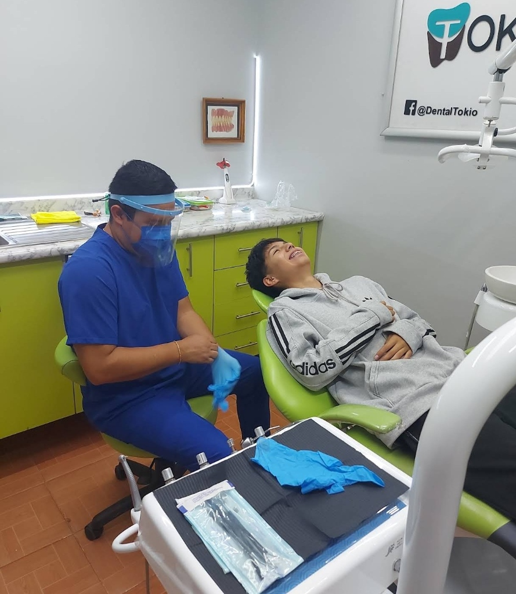
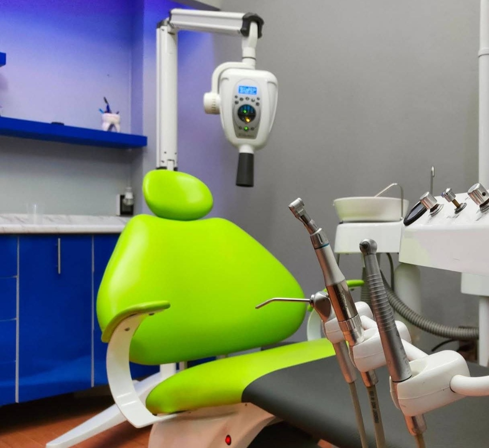
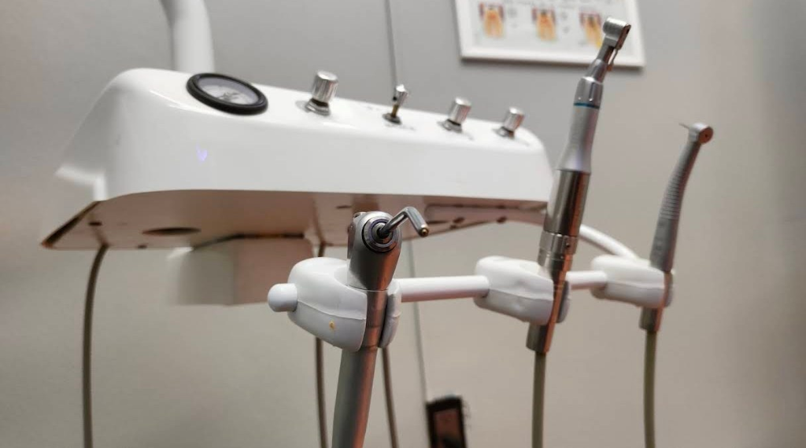
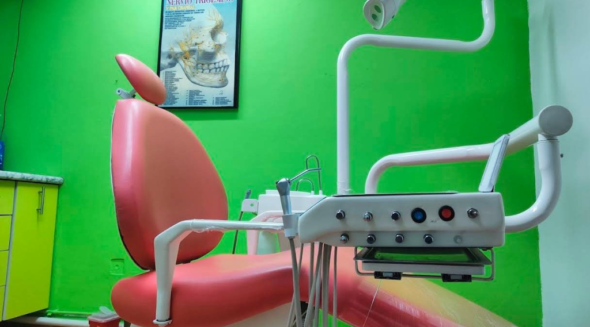
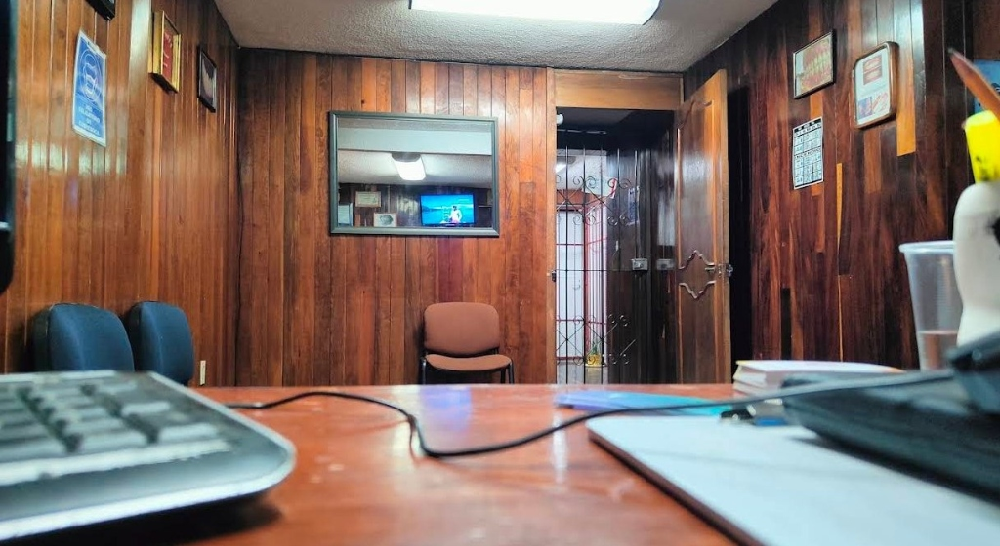

Revisiones y Diagnóstico Integral
Valoraciones completas del estado de salud bucal enfocadas tanto en resolver molestias actuales como en prevenir daños futuros. Te explicamos cada detalle con total paciencia.
Odontología integral con calidez humana, higiene estricta y tecnología moderna en el corazón de Ixtapaluca. Recibe una atención cálida, paciente y sin dolor de la mano del Dr. Daniel, la Dra. Jasmín y la Dra. Ana, bajo los más altos estándares de esterilización.

Atención personalizada con barreras de bioseguridad y paquetes quirúrgicos esterilizados.

Tecnología y Rayos X
Diagnóstico preciso en clínica
Protocolo 100% Esterilizado
Higiene estricta en cada cita
Facturación Disponible
Tarjetas de crédito/débito y CFDI
4.9/5 Calificación en Google
Excelencia clínica comprobada
+245 Reseñas Verificadas
Pacientes reales en Ixtapaluca
Pagos con Tarjeta y Facturación
Efectivo, crédito/débito y CFDI
Horarios Amplios Lun a Sáb
Lun–Vie 10:00–19:00 | Sáb 10:00–17:00
En Consultorio Dental Tokio (Consultorio Dental Ixtapaluca) cuidamos tu salud bucal con diagnósticos honestos, materiales estéticos de alta calidad y procedimientos libres de dolor.
Valoraciones completas del estado de salud bucal enfocadas tanto en resolver molestias actuales como en prevenir daños futuros. Te explicamos cada detalle con total paciencia.
Eliminación de sarro, placa dentobacteriana y pulido dental para prevenir gingivitis y mantener una sonrisa sana y fresca con procedimientos cómodos y cuidadosos.
Rehabilitación de piezas dentales con caries o fracturas utilizando materiales estéticos del color natural del diente para devolverle su función y apariencia armónica.
Procedimientos seguros, indoloros y con estricto protocolo de esterilización e higiene. Acompañamiento cercano para tu total tranquilidad antes, durante y después.
Tratamientos correctivos para mejorar la mordida y la estética de tu sonrisa con seguimiento puntual y ajustes cuidadosos en cada visita.
Alivio rápido y efectivo para dolor de muelas, infecciones o fracturas dentales. Contáctanos de inmediato por WhatsApp o teléfono fijo para atender tu molestia.
En más de 245 opiniones verificadas en Google Maps, nuestros pacientes destacan por su nombre al Dr. Daniel, la Dra. Jasmín y la Dra. Ana por su trato humano, su enorme paciencia para explicar cada diagnóstico y su característica "mano súper suave".
Odontólogo Especialista
Reconocido por sus explicaciones claras, trato amable y procedimientos indoloros.
Odontóloga Especialista
Destacada por los pacientes por su paciencia, delicadeza clínica y mano suave.
Odontóloga Especialista
Elogiada por su calidez humana, atención al detalle y cuidado en cada cita.
Técnicas anestésicas cuidadosas y mano suave para que pierdas el miedo al dentista.
Te explicamos paso a paso lo que realmente necesitas, con precios justos y transparentes.
Instrumental esterilizado en bolsas selladas y barreras descartables en cada paciente.
Agenda rápida por WhatsApp respetando tu tiempo y horario programado.

Aceptamos pagos en efectivo y tarjetas de crédito o débito. Además, emitimos Factura Fiscal (CFDI) para pacientes que requieren comprobar gastos médicos o reembolsos de seguros.
Fotografías 100% reales de nuestras áreas clínicas, unidades odontológicas y recepción en Av. Cuauhtémoc 22, Centro de Ixtapaluca. Haz clic en cualquier foto para ampliarla.
Cada procedimiento se realiza con barreras de protección nuevas y explicación detallada paso a paso.
Radiografía intraoral para revisiones y diagnósticos exactos.

Protección desechable en descansabrazos, cabezal y charola de control.
Tratamientos restauradores, profilaxis y cirugía con tecnología suave.

Ambiente cálido, cobro con tarjeta y emisión de factura fiscal.
Basado en más de 245 opiniones reales verificadas
"Excelente servicio y atención. El Dr. Daniel, la Dra. Jasmín y la Dra. Ana son sumamente profesionales, te explican todo tu diagnóstico con mucha paciencia y tienen la mano súper suave. Cero dolor."
"Las instalaciones están impecables, cuidan muchísimo la higiene y la esterilización en cada procedimiento. Además los precios son muy justos, aceptan tarjeta y te dan factura si la necesitas."
"El mejor consultorio dental en el centro de Ixtapaluca. Te agendan súper rápido por WhatsApp, respetan tu horario de cita y desde la primera revisión notas la calidad y calidez humana de todo el equipo."
Todo lo que necesitas saber antes de tu visita a Consultorio Dental Tokio en el Centro de Ixtapaluca.
Agenda tu cita de valoración hoy mismo por WhatsApp o llámanos a recepción.
Consultorio Dental Ixtapaluca (Consultorio Dental Tokio)
Av. Cuauhtémoc 22 (Interior / Primer piso, zona Centro, junto a Av. Cuauhtémoc 13, Manzana 006), Col. Centro, CP 56530, Ixtapaluca, Estado de México.
Selecciona tu tratamiento y envía tu mensaje listo en 1 clic
Av. Cuauhtémoc 22, Col. Centro, Ixtapaluca
Interior / Primer piso, junto a Av. Cuauhtémoc 13, Manzana 006, CP 56530